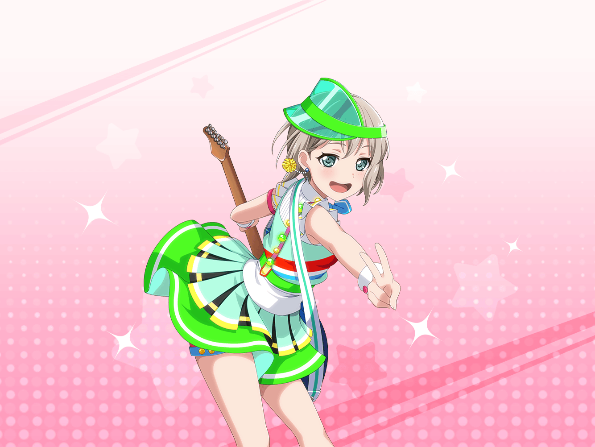

CiRCLE ロビー
まりな
んー、今日もいい天気。
これは掃除もはかどっちゃうな〜
まりな
〜♪
モカ
ど〜も〜、こんにちは〜
モカ
……おやおや〜？
まりなさん、もしかしてその曲……あたし達がこの前作った
『高校生バイト応援ソング』だったりして〜？
まりな
え？ あ、あはは……
最近よく聴いてるから、つい口ずさんじゃったみたい
まりな
この曲、疲れた時とかに聴くと元気が出ていいんだよね
モカ
ほほー……{{userName}}さんはどう思います？
モカ
ふむふむ。頑張ってるって認めてもらえる感じがして
嬉しい……なるほど〜
まりな
あ、それわかる！
そういうのって、ちゃんと気にかけてもらってるって
証拠だし、すごく嬉しくなるよね！
まりな
頑張ってる人に『頑張ってるね』って伝えるのって、
意外と難しいと思うんだ。しっかり相手を見てなくちゃいけないし
なかなかできることじゃないよ
まりな
この曲にはそれができてるってことだし、
すごい曲だと思うな〜
モカ
さっすがまりなさんと{{userName}}さん。
そこ、気づいちゃいましたー？
モカ
そうなんですよ。
実はモカちゃんには、ぜーんぶお見通しなんです。
いえーい、さすがモカちゃん〜
まりな
あはは。モカちゃんらしい反応だ
モカ
ふっふっふー。
まー、そんなにすんなり決まったテーマじゃないんですけどね〜
モカ
そこにたどり着くまでには波乱万丈、
様々な苦難が待ち受けていて〜、ほんと大変だったんですよ〜
モカ
みんなで悩むこと数時間。
いやー、あそこでモカちゃんに天啓がなかったら
どうなっていたことか〜
まりな
天啓？ なんかすごそうだね。詳しく聞かせてよ
モカ
おっ、やっぱり気になります～？
でも残念。今日は時間切れなんですよねー
モカ
実は今日は、『高校生バイト応援ソング』の
メンバーとのスタジオなんですよ。
久しぶりに演奏してみよ〜ってことで〜
まりな
それは残念……けど仕方ないか。
その代わりと言ったらなんだけど、
あとでちょっと聴きに行ってもいい？
モカ
もちろ〜ん。{{userName}}さんも一緒にどうぞー
モカ
それじゃ、お二人にもっと頑張ってもらえるように、
素晴らしい演奏をするとしますか〜
まりな
ふふっ。うん、頑張ってきてね！ 期待してるから！
モカ
モカちゃんに任せなさーい。
ではでは、またあとで〜